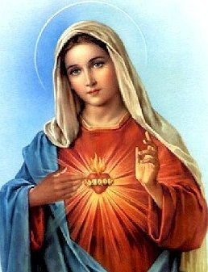

Tout à Jésus par Marie ! |
|
Qui est Marie ?
Marie tient une place singulière dans l’Eglise. Comment ne pas comprendre l'attachement filial de millions de croyants à une figure féminine, perçue comme plus proche, plus douce et consolatrice que celle d'un Dieu, fût-il tendre et attentionné ? Marie est celle qui protège, guide, apaise…. Qui est-elle vraiment pour les catholiques? Marie, sculpture attribuée à Juan Martinez Montanes (1568-1649) © Copyright Photo Imagen M.A.S. Reproduction courtesy of Universidad de Sevilla Au cours des siècles, l’Église catholique s'est interrogée sur la place que devait occuper la mère de Jésus dans la vie des croyants. S'appuyant sur les textes des évangiles et la prière des fidèles, elle a donné à Marie un statut et un rôle qui ont pu varier mais qu'il ne faut ni exagérer, ni à l'inverse minimiser ! Marie est appelée Mère de Dieu, mais elle n'est pas une déesse. Elle avant tout une femme qui, parce qu'elle a répondu la première à l'amour total de Dieu, nous guide à faire de même. Figure discrète et silencieuse de l’Évangile, Marie est aussi celle qui conduit à Jésus, apprend à le prier, à entrer peu à peu dans son intimité et à l'aimer.
La chanson uri Inyange
Tel : 79614036
designed by IGIRANEZA Nina
Tel : 79614036